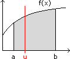
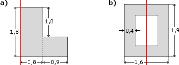
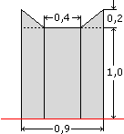
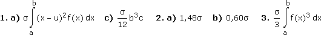
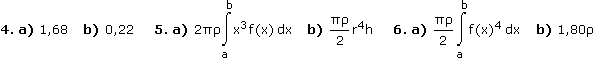

Integralrechnung - Aufgaben 3
1.

Die Fläche zwischen f(x) und a ≤ x ≤ b habe die Dichte σ. a) Bestimme die Integralformel für ihr Trägheitsmoment bezüglich der vertikalen Achse bei x = u. b) Zeige, dass das Trägheitsmoment bezüglich der y-Achse um mus2 größer ist als das Trägheitsmoment bezüglich der vertikalen Schwerelinie (Steiner'sche Satz). c) Bestimme mit a) das Trägheitsmoment der Rechtecks zwischen f(x) = c und 0 ≤ x ≤ b bezüglich der vertikalen Schwerelinie.
2.
Berechne mit 1c) und dem Steiner'schen Satz das Trägheitsmoment folgender Flächen bezüglich der rot eingezeichneten Achse:

3.
Bestimme die Integralformel für das Trägheitsmoment der Fläche zwischen f(x) und a ≤ x ≤ b bezüglich der x-Achse.
4.
Berechne mit 3) das Trägheitsmoment bezüglich der x-Achse, wenn σ = 1 und
a) f: y =
, a = 0, b = 10
b) f: y = sinx, a = 0, b =
5.
Der Körper, der durch Drehung der Fläche zwischen f(x) und a ≤ x ≤ b um die y-Achse entsteht, habe die Dichte ρ. Bestimme a) die Integralformel für sein Trägheitsmoment bezüglich der y-Achse und damit b) das Trägheitsmoment einer Scheibe bezüglich ihrer Mittelachse.
6.

Der Körper, der durch Drehung der Fläche zwischen f(x) und a ≤ x ≤ b um die x-Achse entsteht, habe die Dichte ρ. a) Bestimme die Integralformel für sein Trägheitsmoment bezüglich der x-Achse. b) Berechne damit das Trägheitsmoment der Rolle, die durch Drehung der nebenstehenden Fläche um die rot eingezeichnete Achse entsteht, bezüglich dieser Achse.
Ergebnisse:

